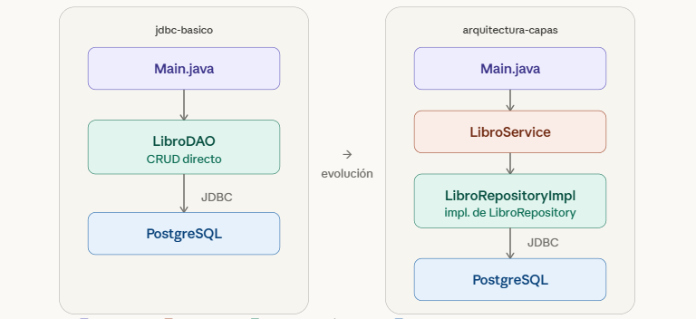

Acceso a Datos con JDBC
2025 · Módulo Acceso a Datos · DAM 2º curso

Descripción
Proyecto desarrollado durante el módulo de Acceso a Datos del ciclo de DAM. Muestra la evolución desde una conexión directa y básica a una base de datos PostgreSQL hasta una aplicación estructurada con arquitectura limpia en capas.
Contiene dos subproyectos diferenciados: un CRUD mínimo con un único DAO
(jdbc-basico), y una versión refactorizada con separación de
responsabilidades entre modelo, repositorio, servicio y clase de entrada
(arquitectura-capas).
Retos y aprendizajes
El mayor aprendizaje fue comprender la conexión real entre Java y una base de
datos relacional sin la abstracción de un ORM: gestión manual del
Connection, PreparedStatement y ResultSet,
y el ciclo de vida de los recursos.
La segunda fase supuso un salto conceptual importante: diseñar una arquitectura desacoplada donde cada capa tiene una única responsabilidad y se comunica a través de interfaces, aplicando inyección de dependencias sin frameworks externos.